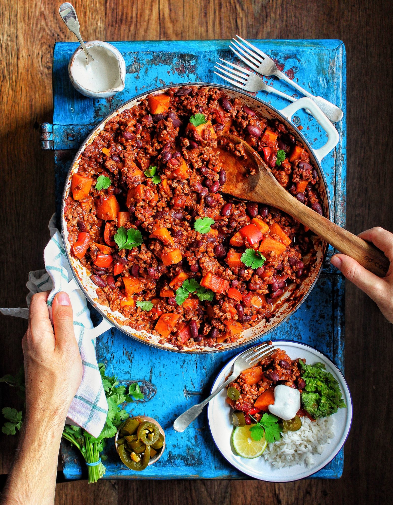

Vegan Chili
Acknowledgement
This recipe is sourced from @avantegardevegan's YouTube channel. I am using it for educational purposes.

Description
Here is my Ultimate Chilli Con Carne (Chilli with ‘meat’) of course this is cruelty free & is filled with my seitan ‘steaks’ & pulled Oyster mushrooms to give it that ‘meat’ look & taste! It’s seriously good & perfect for the halloween season. You don’t have to use both the mushrooms & ‘steak’ mince.
Ingredients
- 3 tbs Rapeseed Oil
- 1 Red Onion, chopped fine
- 3 Cloves of Garlic, minced
- 1 Fresh Red Chilli, sliced fine
- 1 Red Pepper, cubed
- 2 tsp Ground Cumin
- 2 tsp Ground Coriander
- 2 tsp Ground Cinnamon
- 2 tsp Cayenne Pepper
- 3 cups Chopped Tomatoes
- 1 & 1/2 cups Red Kidney Beans
- 2 Seitan Steaks, recipe here
- 6 King Oyster Mushrooms
- 1 small Pumpkin, peeled & de-seeded
- 1/3 cup Good Quality Dark Chocolate
- Pinch of Sea Salt & Pepper
- Handfull Chopped Coriander
Directions
- Sautee garlic, onion, and chili in oil, over medium heat.
- Add spices and allow onions to soften.
- Add mushrooms, adding mushrooms earlier allows them to carmelize and crispen, allow to cook for about 4 minutes.
- Add steak mince, Red Pepper cubes, Pumpkin, and salt to flavor.
- Add remaining ingredients, cover, and let simmer for about 25 minutes.
- Secret Ingredient: A touch of dark chocolate.